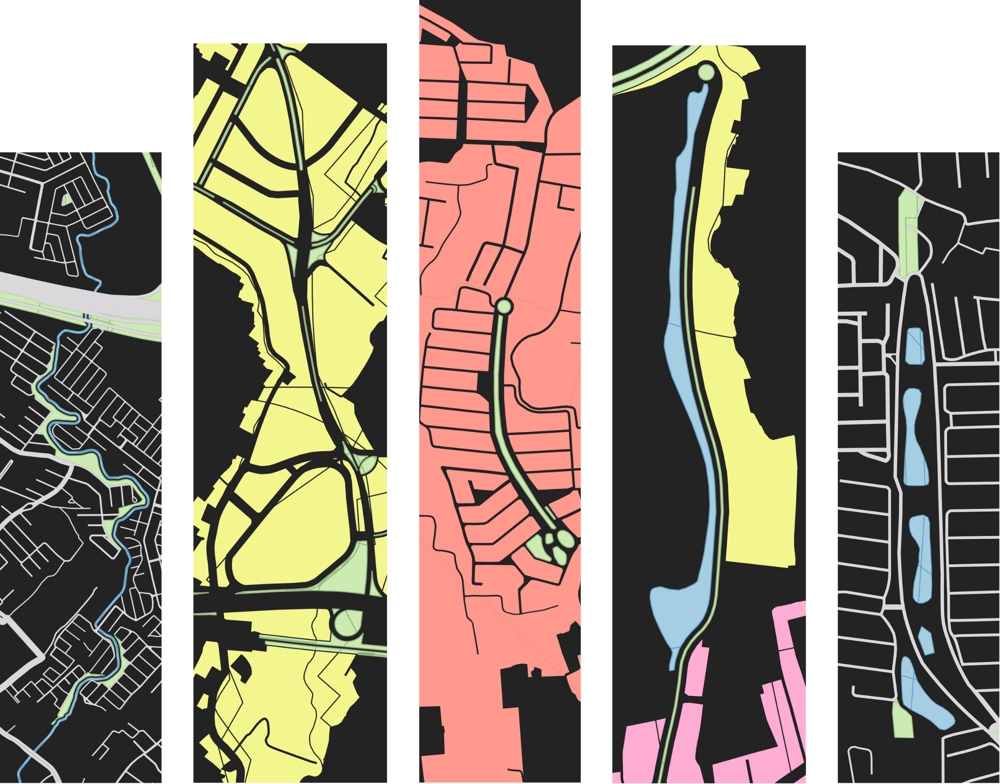

Geomorphological analysis, hydrological modeling, the analysis of space, and other geographical projects currated in one site.
A portfolio of spatial research

Geomorphological analysis, hydrological modeling, the analysis of space, and other geographical projects currated in one site.